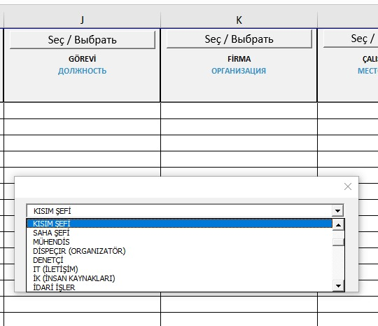
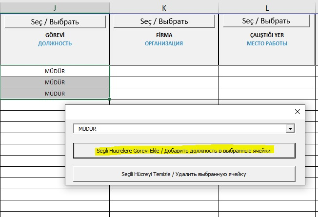
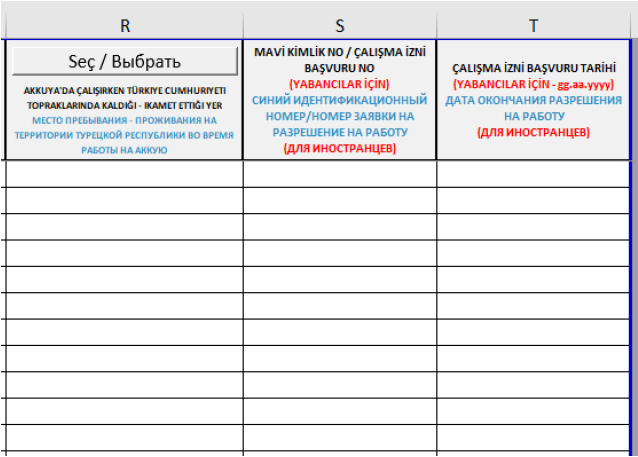
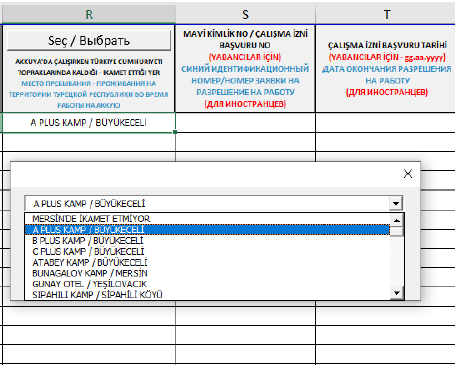
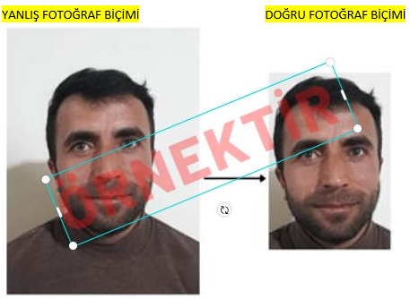

Akkuyu NGS inşaat alanına personel giriş işlemleri için aşağıda listelenen evraklar, (muge.dundar@t2ic.com , hafize.isin@t2ic.com)
e-posta adreslerine gönderilmelidir:
• Personel Giriş Excel Tablosu (eksiksiz ve doğru doldurulmalıdır)
• Takip Formu
• SGK Belgesi
• Fotoğraf
Fiziki evrak teslimi gerekmemektedir.
Belgelerin isimlendirilmesi: Evraklar, personelin pasaporttaki adı ve soyadı ile büyük harflerle, doğru sırayla ve TC kimlik numarasının son üç hanesiyle adlandırılmalıdır.
Her personel için ayrı bir dosya oluşturulmalı ve belgeler 7Z zip formatında sıkıştırılarak gönderilmelidir.
Örnek isimlendirme:
ALI KAYA TAKIP FORMU
ALI KAYA SGK
ALI KAYA FOTOGRAF
ÖNEMLİ: Eğer personel başka bir firmadan geliyorsa, geldiği firma ile sahadan bir firmanın sözleşmesinin ilk ve son sayfasının da gönderilmesi gereklidir.
• Sağlık Takip Formu olmadan, maksimum 5 iş günü boyunca ziyaretçi girişi yapılabilir. Daha uzun süre kalacak personel için subcontractor@t2ic.com
adresi ile iletişime geçilmelidir.
Akkuyu Nükleer A.Ş. Şantiye Sahasına Giriş Yapan Personelin İkamet Bilgileri Hakkında
Akkuyu Nükleer A.Ş. şantiye sahasına giriş yapan personelin güvenlik soruşturmalarının Enerji Bakanlığı tarafından gerçekleştirilebilmesi
için, personelin ikamet adreslerinin tarafımıza bildirilmesi zorunludur. Giriş kartları, bu listelere göre çalışanlara teslim edilecek olup,
bildirilmemiş olanlar için Akkuyu Nükleer A.Ş. tarafından kart teslimi yapılmayacağını önemle bildiririz.
Bakanlık evraklarını kontrol amacıyla tarafımıza iletirken, eğer personelin ikamet adresi henüz belirlenmemişse ya da değişebilir bir durumda
ise, saha giriş kart talebinde bulunurken ikamet bilgilerini güncellemeniz ya da eklemeniz MUTLAKA gerekmektedir.
Akkuyu Nükleer A.Ş. şantiye sahasında çalışacak personelin veri girişine yönelik eklenen sütunlar ve kullanım talimatları şu şekildedir:
• Personel giriş tablosunda, zorunlu olarak seçim yapılması gereken sütunlar mevcuttur. Bu sütunlarda seçim yapmak için Seç/Выбрать
butonuna tıklamanız gerekmektedir. Bu alanlara manuel olarak veri girişi yapılamaz ve kopyalanmış bir metin yapıştırılamaz. Bu sütunlar boş
bırakılamaz ve seçenek dışındaki bir veri kabul edilemez.
• Seç/Выбрать butonu bulunmayan sütunlar ise manuel olarak doldurulmalıdır. Bu sütunlardaki tüm bilgiler büyük Latin harfleriyle yazılmalıdır.

Seçilen Veriyi İlgili Sütuna Yapıştırma Talimatı:
• Sütundaki ilgili satır veya satırları seçmek için mouse imlecini kullanarak seçim yapın.
• Açılan pencerede “Seçili Hücrelere Görevi Ekle” butonuna tıklayın. Seçilen veri, seçilen satırlara eklenir. Ne kadar satır seçilirse,
o kadar satıra veri eklenir.

Girilen Veriyi Silme Talimatı:
• İlgili sütundaki veriyi silmek için “Seçili Hücreyi Temizle” butonuna tıklayın.

• DELETE komutuyla silme işlemi yapılamaz. DELETE komutuyla silme girişiminde uyarı mesajı alınır.

Veri Değişikliği Talimatı:
• İlgili veri üzerinde değişiklik yapmak için Seç/Выбрать
butonuna tıklayıp yeni bilgiyi seçin. Ardından “Seçili Hücrelere Görevi Ekle” butonuna tıklayarak değişiklikleri tamamlayın.

Tablonun En Sonuna Eklenen Yeni Sütunlar:
R sütunu: Personelin Akkuyu’da çalışırken Türkiye Cumhuriyeti topraklarında ikamet ettiği yer. Bakanlık evraklarının
kontrolünde bu sütunun doldurulması zorunlu değildir, ancak fiziki kart talebinde bulunurken bu alan doldurulmalıdır.
Boş bırakılamaz ve personel Mersin il sınırı içerisinde yaşıyorsa, ilgili ikamet adresi seçilmelidir. Mersin il sınırları
dışında yaşıyorsa “Mersin’de ikamet etmiyor” seçeneği kullanılmalıdır.
 
S sütunu:Yabancı personel için çalışma izni başvuru numarası veya mavi kimlik numarası (99 ile başlayan kimlik) girilmelidir.
Türk personeller veya görevlendirme ile saha ziyareti gerçekleştiren personeller için bu sütun doldurulması zorunlu değildir.
T sütunu:Çalışma izni başvurusu yapılmışsa yabancı personel için bu sütun doldurulmalıdır. Fiziki kimlik mevcutsa doldurulmaz.
Türk personeller ve saha ziyareti gerçekleştiren görevliler için doldurulması zorunlu değildir.

Doldurulacak Diğer Alanlar:
1. Geliş Tarihi: Evrakların hazırlandığı tarih.
2. Talep Eden: Firmanın personel sorumlusunun adı soyadı.
3. Talep Eden İletişim Bilgileri: Firmanın personel sorumlusunun cep telefon numarası.
4. Ad: Firmada göreve başlayacak personelin adı.
5. Soyad: Firmada göreve başlayacak personelin soyadı.
6. TC/PAS: Personelin kimlik veya pasaport numarası.
7. Baba Adı: Yabancı personeller için baba adı.
8. Doğum Yeri: Personelin doğum yeri.
9. Doğum Tarihi: Personelin doğum tarihi.

10. Görevi: Personelin görev bilgisi.
11. Firma: Personelin çalışacağı firma bilgisi.
NOT: Eğer firma listede yoksa bizimle iletişime geçin.
12. Çalıştığı Yer: Personelin görev yapacağı yer.
13. Cinsiyet: Personelin cinsiyet bilgisi.
14. Çalışan Telefon Numarası: Personelin telefon numarası.
15. Çalışan Yakını Telefon Numarası: Personelin yakınının telefon numarası.
16. Adli Sicil Kaydı ve Sağlık Kısıtlamaları: Personelin varsa adli sicil kayıt ve sağlık kısıtlamaları.
17. Uyruk: Personelin uyruk bilgisi.
NOT: Tüm alanlar talimatlara uygun olarak eksiksiz doldurulmalıdır.

Prosedür:
• Saha geçiş kartı başvurusunun yapılabilmesi için, çalışanın evraklarının işveren tarafından kontrol edildiğine dair tarafınıza bildirim geldikten sonra, bu formun ayrıca tarafımıza gönderilmesi gerekmektedir.
• Bu prosedür, çalışma izni (Çİ) başvurusu olan çalışanlar ile sahaya 30 günden fazla kalmamak üzere görevlendirilip sonrasında Çİ alacak çalışanları da kapsamaktadır.
Gözetim ve Kayıt Formu ile ilgili: Formun nasıl alınacağı, kim tarafından verileceği gibi sorularınızı, çalıştığınız veya sözleşmeli olduğunuz şirketin İK departmanı çalışanlarına yöneltmenizi rica ederiz.
ÖNEMLİ: Eğer başka bir firma ile sözleşmeniz varsa, o firmanın kaşeli ve imzalı ilk ve son sayfalarını da eklemeniz gerekmektedir.
TİTAN 2 IC İÇTAŞ İNŞAAT A.Ş Ekibi TSM ENERJİ Ekibi IC İÇTAŞ NÜKLEER Ekibi
SGK belgenizi, kişisel E-Devlet hesabınızdan aşağıda verilen link üzerinden veya firmanızın İnsan Kaynakları departmanından temin edebilirsiniz:
SGK Belgesi için E-Devlet

Akkuyu Nükleer Güç Sahasına giriş kartınıza basılmak üzere fotoğraf göndermeniz gerekmektedir.
Lütfen aşağıdaki kurallara dikkat edin:
1. Fotoğrafın arka planı beyaz olmalı ve fotoğraf net olmalıdır (flu, parlak veya gölgeli yüzler kabul edilmeyecektir).
2. Fotoğraf kırpılmış olmalı ve yalnızca .jpg formatında gönderilmelidir.
3. Fotoğraf isimlendirmesi, İngilizce küçük harflerle ve TC Kimlik numarasının son 3 hanesi ile yapılmalıdır.
Örnek : MEHMET ŞAHİN >> mehmetsahin123.jpg